Java环境安装
相关概念
简单地说，Java 是由 Sun Microsystems 公司于 1995 年推出的一门面向对象程序设计语言。2010 年 Oracle 公司收购 Sun Microsystems，之后由 Oracle 公司负责 Java 的维护和版本升级。
其实，Java 还是一个平台。Java 平台由 Java 虚拟机（Java Virtual Machine，JVM）和 Java 应用编程接口（Application Programming Interface，API）构成。Java 应用编程接口为此提供了一个独立于操作系统的标准接口，可分为基本部分和扩展部分。在硬件或操作系统平台上安装一个 Java 平台之后，Java 应用程序就可运行。
Java 平台已经嵌入了几乎所有的操作系统。这样 Java 程序只编译一次，就可以在各种系统中运行。Java 的版本很多，目前大约六个月就会处一个新的版本。
JDK
**Java Development Kit（JDK）**是Sun微系统针对Java开发人员发布的**免费软件开发工具包**（SDK，Software development kit）。自从Java推出以来，JDK已经成为使用最广泛的Java SDK。由于JDK的一部分特性采用商业许可证，而非开源。因此，2006年Sun微系统宣布将发布基于GPL的开源JDK，使JDK成为自由软件。在去掉了少量闭源特性之后，Sun微系统最终促成了GPL的OpenJDK的发布。在JDK中包含一个JRE的Java运行环境。
JRE
**JRE**是**Java Runtime Environment**的简称，指Java运行环境，是**Sun的产品**。运行JAVA程序所必须的环境的集合，**包含JVM标准实现及Java核心类库**。**JRE**（包括Java Plug-in）是Sun的产品，包括两部分：**Java Runtime Environment和Java** **Plug-in**。**Java Runtime Environment**是可以在其上运行、测试和传输应用程序的Java平台。它**不包含开发工具(JDK)--编译器、调试器和其它工具**。JRE需要辅助软件--Java Plug-in--以便在浏览器中运行applet。
JVM
**Java Virtual Machine（JVM）**是Java虚拟机。Java为了能够实现在跨平台运行的问题，通过设计了一个虚拟机，即JVM，让所有的java代码跑在java虚拟机上，让java虚拟机运行在不同的平台上。这样实现了**跨平台**的功能，但是也是Java的最大缺点所在，每次运行Java程序都要先启动一个JVM，导致Java程序的启动与关闭缓慢。
安装所需要的软件
作为开发人员，我们需要使用到软件开发工具包，可以在Oracle的官网进行下载。
由于官网需要登录后才能进行下载，我们也可以去国内一些镜像站下载我们所需要的版本。
这里使用了编程宝库的镜像，这里可以下载到你想要的各种版本。
我选择的是Oracle的JDK8，可以根据自己的系统下载不同的包，这里以jdk-8u333-windows-x64.exe为例。
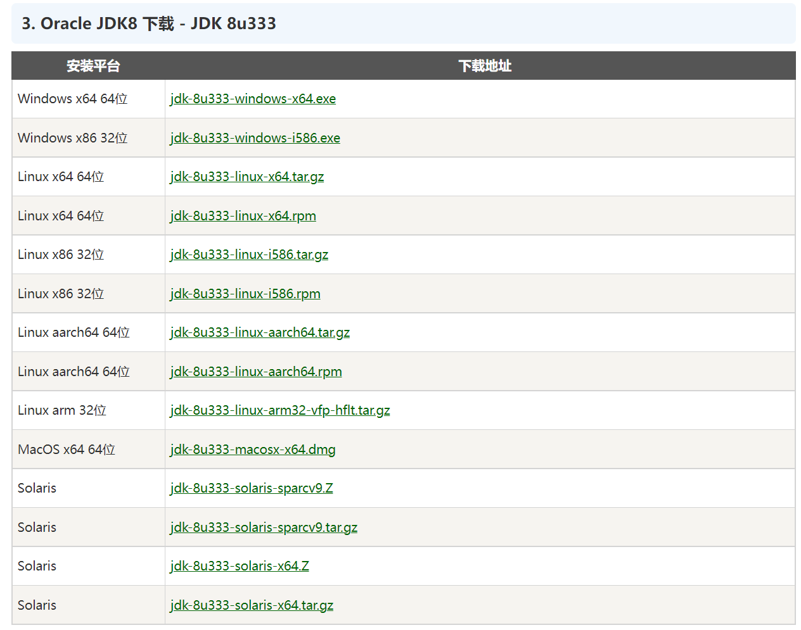
安装步骤
按照安装程序不断的点击下一步
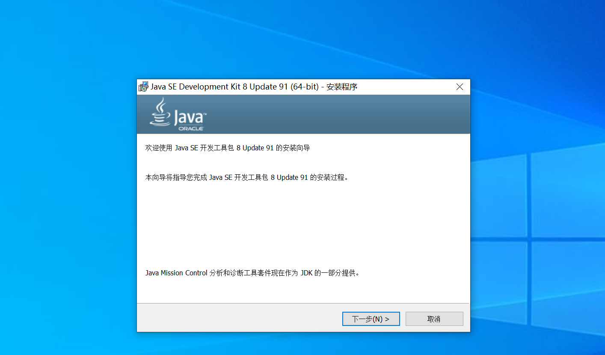
选择开发工具进行安装，安装位置因人而异，但是需要记住自己安装的位置，后期需要用到。
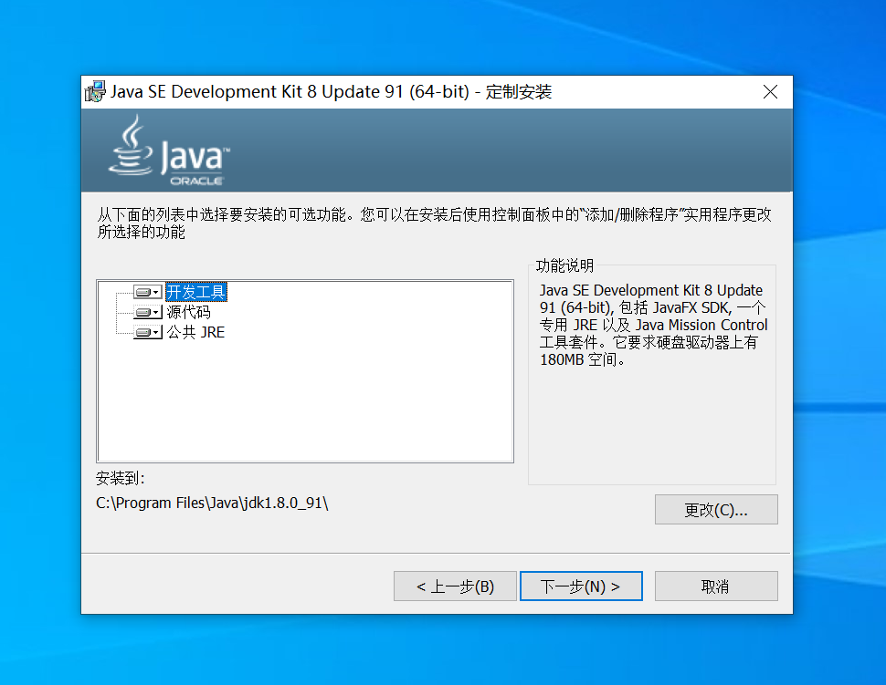
我这里选择了在C盘下的Java文件夹内进行安装。点击下一步继续安装。
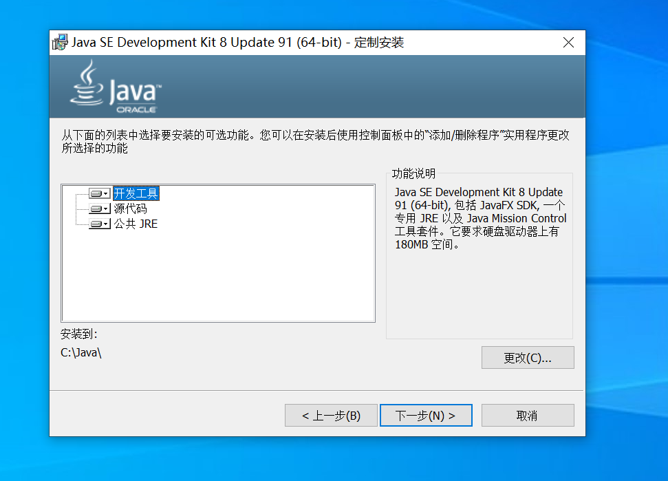
随着安装进行，会跳出一个新的安装界面，这个是JRE程序的安装。
前文中提及过在JDK中包含了一个JRE，如果此时继续安装一个JRE，会在你的电脑中有两个JRE，这样会比较混乱，个人建议无需安装，直接点击右上角的退出即可。
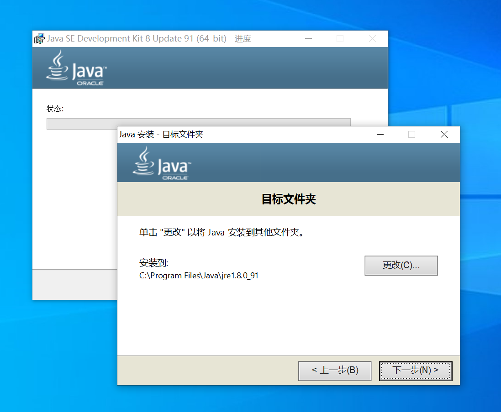
确认退出之后程序将完成安装
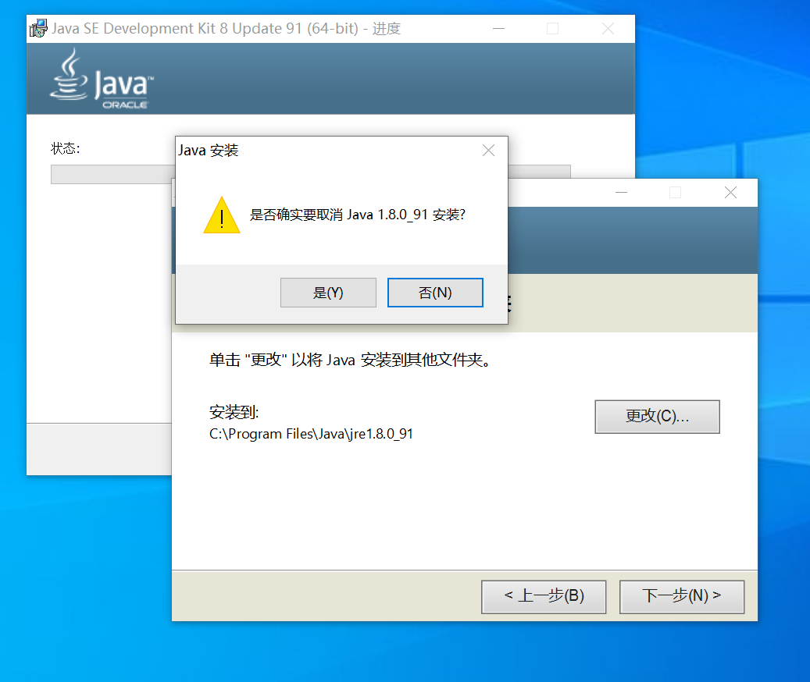
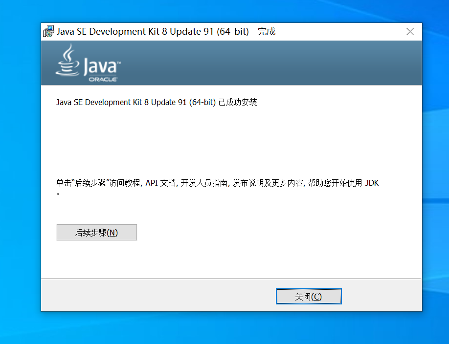
选择关闭之后你的JDK已经安装完成，还需要在系统的环境变量中进行添加。
右击此电脑，打开属性，找到高级系统设置
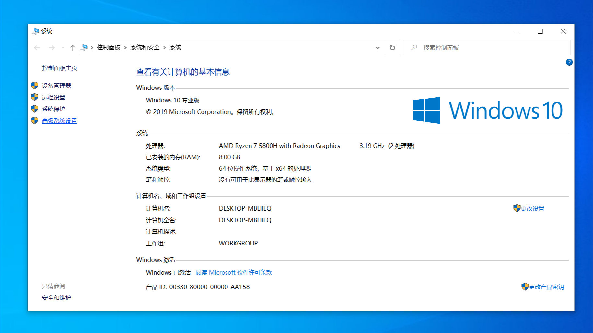
打开环境变量
现在就能看见这样的一个界面
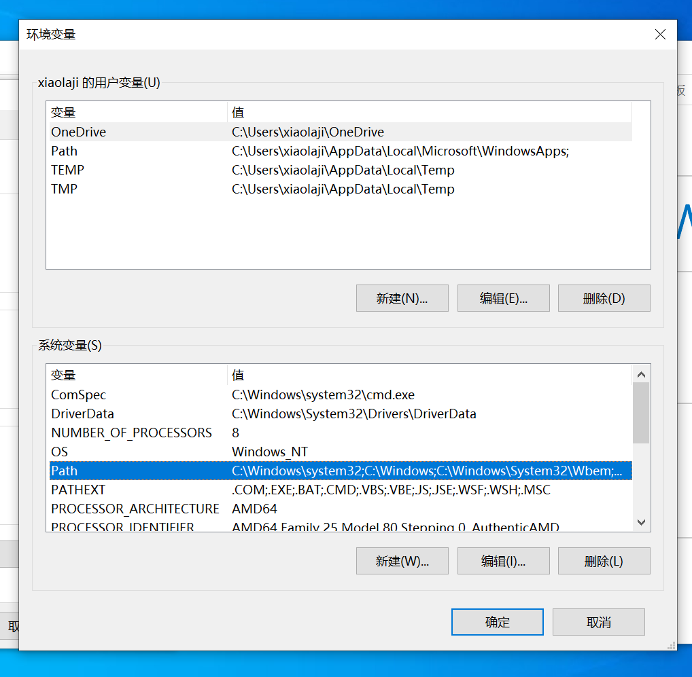
现在之前记下来的JDK安装位置的作用就显现出来了，去到安装目录下，找到bin目录，进入后复制其路径
在刚才的环境变量界面下双击Path，对系统环境变量进行编辑
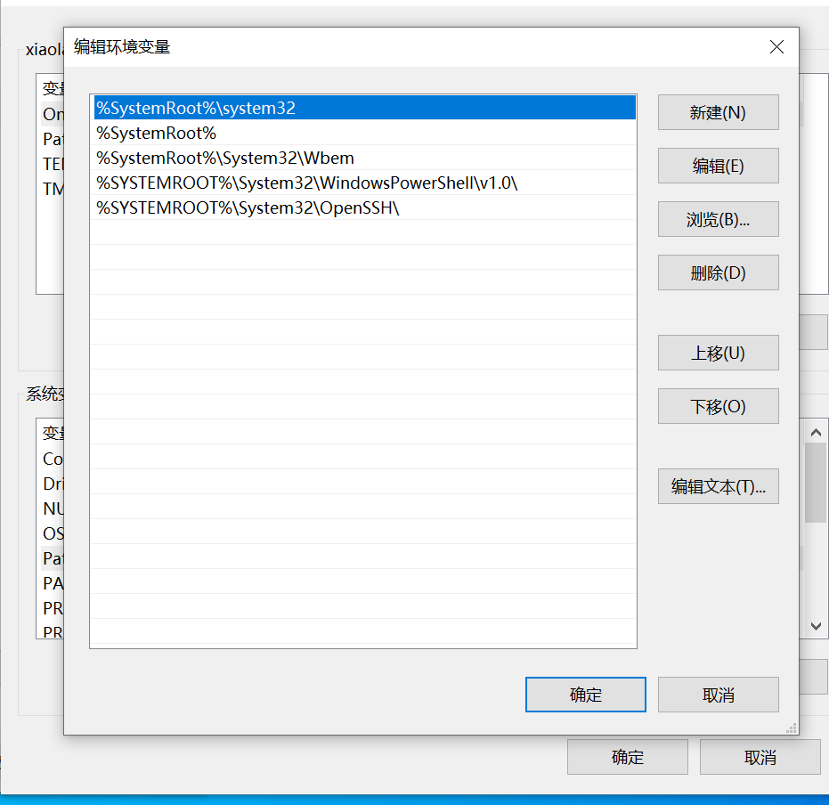
选择新建，将刚刚复制的bin目录的路径填入新建的环境变量中
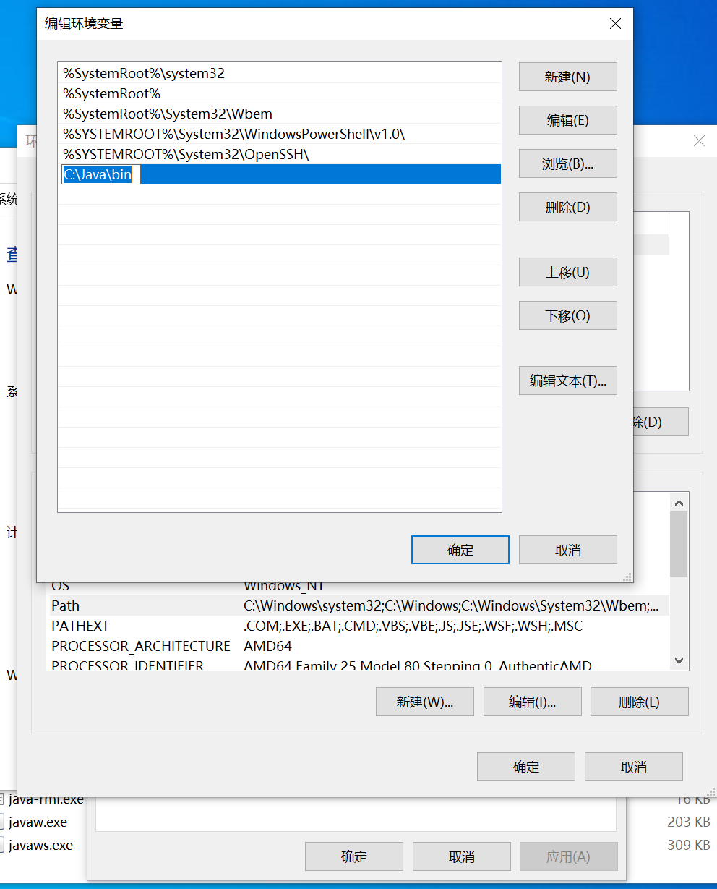
逐步点击确定，将修改进行保存，退回到桌面，现在Java的环境已经部署完成，我们现在可以写一个简单的Java程序来检验一下我们的安装是否成功。
简单程序输出
创建一个文本文件，往里写入一个java程序
1 | |
将文件重命名为 Hello.java
在桌面上按住shift键进行右击，打开Powershell窗口
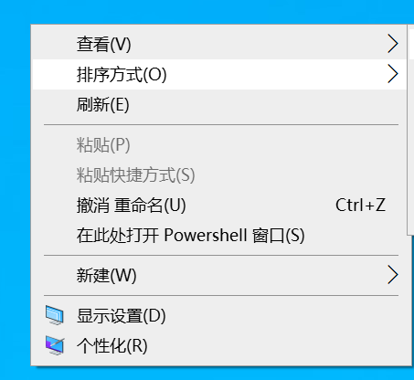
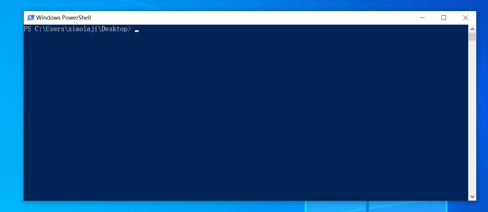
输入javac Hello.java 对java程序进行编译，回生成一个Helloworld.class文件
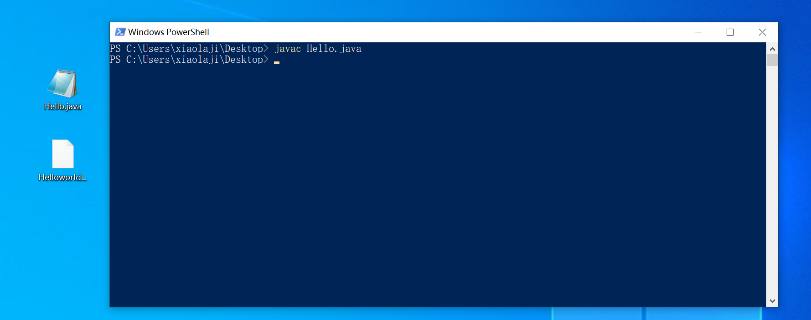
输入·java Helloword·,将会在屏幕上打印一个Hello World
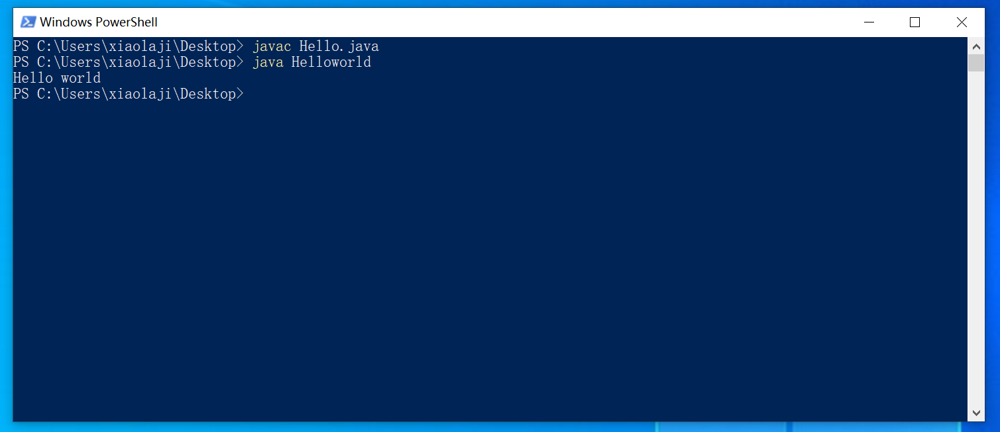
得到预期结果，环境变量安装完成。
代码编辑器的选择
在我们的日常写代码的工作中，面对大量的需求与代码量，使用记事本进行写代码是完全不现实的，市面上有许多优秀的IDE。对于Java来说，市面上较为主流的IDE如下图，可以根据个人的喜好与习惯进行选择。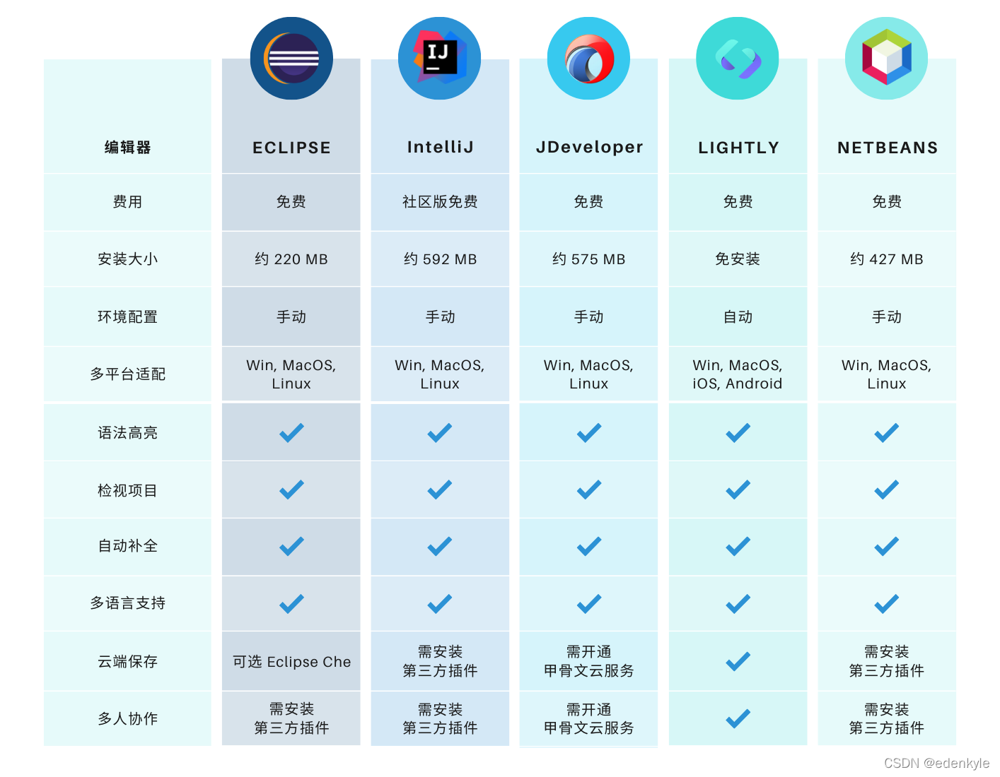
好的IDE可以让我们写代码的过程更为方便，但是IDE再好，也不能对我们的代码逻辑进行优化，个人的代码能力才是最重要的。